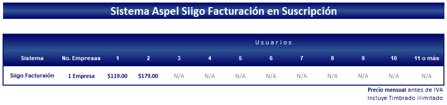

body
ASPEL
Inicio
Nosotros
Servicios
Factura
ASPEL
Contacto
Inicio
ASPEL
SISTEMAS INTEGRADOS
ASPEL
• SAE
• NOI
• COI
• BANCO
• PROD
• CAJA
• FACTURE
• Precios
REGRESAR
Sistema Administrativo Empresarial
Características
Requerimientos
Interfase
Precios
Características
• Le permite a tu empresa
Controlar el ciclo de todas las operaciones de compra-venta de la empresa como: inventarios, clientes, facturación, cuentas por cobrar, vendedores, compras, proveedores y cuentas por pagar. Automatizar eficientemente los procesos administrativos, asegurando el cumplimiento de las disposiciones fiscales. Permite conectar de manera remota las sucursales de la empresa. Conocer y hacer crecer tu negocio, pues tendrás toda la información necesaria para desarrollar las estrategias comerciales que más te convengan. Emitir comprobantes fiscales digitales (factura electrónica) desde el sistema con el que administras tu empresa, tan fácil como dar un clic.
• Administración de clientes y cuentas por cobrar
Se tiene un expediente completo del cliente con: productos más vendidos, apartados, facturas pendientes, estados de cuenta, antigüedad de saldos, ventas, contactos y citas (dinámica interfaz con Microsoft Outlook® versión 2000 o superior), además de documentos digitalizados. Todos los campos informativos que requieras y de la longitud necesaria. Lista de precios por cliente. Campañas de venta y telemarketing para el registro y seguimiento de clientes y prospectos, avance de las campañas, desempeño de los ejecutivos de venta, entre otros. Múltiples reportes de las cuentas por cobrar con saldos vencidos y al corriente, como el historial crediticio, entre otros.
• Control de Inventarios
Manejo y control de las diferentes características de los productos, servicios y kits de venta:
- Fotografía del producto.
- Tallas y colores.
- Diferentes claves de identificación por cada producto, asociadas a clientes o proveedores.
- Lotes, pedimentos y números de serie.
- Número ilimitado de listas de precios.
- Diferentes tipos de costeo: UEPS, PEPS, promedio e identificado.
- Hasta 4 impuestos por producto con diferentes tasas.
Manejo de existencias en almacenes y traspasos automáticos entre ellos. Eficientes consultas y reportes como: kárdex, ventas y utilidad, existencias y costos a una fecha determinada, listas de precios, entre otros.
• Facturas y Vendedores
Cotizaciones, pedidos, remisiones, facturas y devoluciones. Control del IVA (Impuesto al Valor Agregado) por flujo de efectivo. Manejo de sucursales:
- Número ilimitado de series y folios de documentos de ventas.
- Domicilio de expedición por sucursal.
- La posibilidad de realizar una conexión remota a través de Internet entre oficinas o sucursales, permitiendo a las empresas operar de forma distribuida pero concentrando sus operaciones.
• Fácil captura:
- La mercancía puede salir de varios almacenes en un sólo documento.
- Manejo de productos sustitutos para una mejor comercialización.
- Personalización de la ventana de captura para visualizar únicamente los campos requeridos.
• Comprobantes Fiscales
Manejo de todo tipo de comprobantes fiscales, tanto impresos como digitales, con todos los requisitos y controles establecidos por la legislación vigente: Código de Barras Bidimensional (CBB), Comprobantes Fiscales Digitales (CFD) y Comprobantes Fiscales Digitales por Internet (CFDI).
• Proveedores, Compras y Cuentas por Pagar
Eficiente expediente del proveedor, con datos y saldos de los proveedores, estados de cuenta, antigüedad de saldos, pronóstico de pagos, entre otros. Nuevo ciclo de documentos de compras: Requisición, orden de compra, recepción de mercancía, compras y devoluciones. Eficiente captura de documentos:
- Consulta del comparativo de costos y tiempos de entrega del producto.
- Ingresa a diferentes almacenes lo adquirido.
- Manejo de importaciones: Captura de gastos indirectos posterior a la generación de la compra. Posibilidad de “re-costeo” del producto a partir de los gastos indirectos.
Control del IVA por flujo de efectivo y generación de la Declaración Informativa de Operaciones con Terceros (DIOT) de acuerdo al Art. 32 de la LIVA. Nuevos y mejores reportes, con más filtros y funciones para un análisis eficiente de información: historial crediticio con el proveedor, estado de cuenta, pronóstico de pagos, antigüedad de saldos, entre otros.
• Multimoneda
Compras y ventas en diversas monedas. Movimientos de cuentas por cobrar y por pagar en cualquier moneda. Determinación automática de la pérdida o ganancia cambiaria relacionada a las cuentas por cobrar y por pagar. Reportes con montos en moneda nacional y/o extranjera.
• Fácil puesta en marcha
Captura de los catálogos del sistema a partir de hojas de cálculo de Microsoft Excel®, facilitando la integración de la información.
• Aspel-SAE Comercio Electrónico
Crea tu Tienda Virtual en Internet para exhibir, promocionar y vender los productos y servicios de la empresa los 365 días del año.
• Aspel-INFOWEB
Publica en Internet las consultas, estadísticas y reportes del sistema, además de cualquier tipo de documento requerido.
Requerimientos Minimos de Hardware y Software
- Windows Server 2012
- Windows 10
- Procesador Intel de 32 bits (x86) a 2.5 GHz
- 4 GB de RAM
- 500 MB espacio libre en Disco Duro
- Monitos SVGA 1024 x 768
Considerar que los requerimientos del Sistema Operativo pueden ser mayores.
Interfaz
Precios
Sistema de Nómina Integral
Características
Requerimientos
Interfase
Precios
Características
• Le permite a tu empresa:
- Controlar todos los aspectos de la nómina como sueldos y salarios, impuestos, retenciones, previsión social, diferentes percepciones y deducciones con exactitud.
- Calcular las retenciones y las aportaciones de ISR, IMSS, SAR e INFONAVIT, de acuerdo a las disposiciones fiscales y facilitando el cumplimiento de las obligaciones patronales.
- Controlar y administrar el pago por hora a los trabajadores, calculando debidamente faltas, vacaciones, horas extras y aportaciones de seguridad social.
- Interfaz en línea con el IMSS desde tu empresa (IDSE) para el envío automático de movimientos afiliatorios.
- Importar y enviar movimientos a hojas de cálculo de Microsoft Excel®, las cuales pueden utilizarse como interfaz con relojes checadores.
- Dispersar la nómina con los principales bancos.
• Cuenta con:
Expediente del trabajador que incluye:
- Información general:
• Fotografía del trabajador.
• Salario, puesto, departamento, clasificación, la información de afiliación al IMSS.
• Personalización del cálculo del impuesto por trabajador como: aplicación del cálculo anual de ISR por trabajador.
- Histórico de salarios con:
• Cambios de salarios (incluyendo SDI).
• Su trayectoria o cambios de puesto y departamento en la empresa.
• Vacaciones y faltas.
• Datos de familia y beneficiarios.
• Cálculo de la Nómina
- Percepciones y deducciones.
• Catálogo estándar pre-configurado con las disposiciones fiscales correspondientes.
• Versatilidad en la definición de cada percepción: fija o variable para efectos de IMSS, gravable o no para las diferentes contribuciones como ISR e IMSS, entre otros.
- Movimiento a la nómina.
• Agíl captura.
• Control de faltas.
• Clasificación automática de las horas extras dobles o triples de acuerdo a la Ley Federal del Trabajo.
• Programación de vacaciones por trabajador y aplicación automática de la prima vacacional correspondiente.
• Cálculo de finiquitos y liquidaciones.
• Modulo Fiscal
• Genera automáticamente la información requerida por el DIM para la Declaración Informativa de Sueldos y Salarios.
• Cálculo de retención de ISR, cálculo anual, Art. 142 del RLISR apegados a la Ley del ISR y su reglamento.
• Desglose de todos los cálculos de impuesto (ISR) e IMSS.
• IMSS y SUA
• Envío seguro de movimientos afiliatorios al lMSS vía Internet (IDSE 2.0) firmados con el certificado digital sin necesidad de utilizar otras aplicaciones.
• Manejo de múltiples registros patronales facilitando el control para las empresas que manejan sucursales.
• Cálculos y reportes apegados a la Ley del Seguro Social e interfaz con el Sistema Único de Autodeterminación (SUA).
• Genera el archivo de movimientos para pagos de IMSS y AFORE, reporte de factor de riesgo y pensiones alimenticias.
• Consultas, reportes y hojas de cálculo
• Genera diversos reportes: nómina, faltas, vacaciones, aniversarios, horas extras, reporte IMSS, desgloses por percepción y deducción, SAR e INFONAVIT, entre otros.
• Selección específica o general de toda la información de la nómina, la cual puede ser copiada a hojas de cálculo de Microsoft Excel® y exportada a formatos como: Internet (html), Microsoft Excel® (biff3), ASCII (txt), entre otros.
• Fácil envío de consultas y reportes por correo electrónico.
•Procesos de nómina y utilerías
• Nuevo y eficiente proceso de reparto de utilidades.
• Control de las renovaciones y vencimientos de contratos.
• Bitácora, donde podrás consultar los movimientos realizados en el sistema por cada usuario.
• Interfaz con los sistemas Aspel
Facilita la integración de procesos administrativos a la vez que contribuye a la disminución de errores y tiempos de captura.
• Con Aspel-COI: Genera y contabiliza las pólizas en línea de los movimientos de la nómina: pólizas generales, por departamento, trabajador o cuenta auxiliar. De esta manera, el registro contable podrá realizarse de manera general o específica según se requiera.
• Con Aspel-BANCO: Realiza los cheques para el pago de nómina y su seguimiento.
Requerimientos Minimos de Hardware y Software
- Windows Server 2012
- Windows 10
- Procesador Intel de 32 bits (x86) a 2.5 GHz
- 4 GB de RAM
- 500 MB espacio libre en Disco Duro
- Monitos SVGA 1024 x 768
Considerar que los requerimientos del Sistema Operativo pueden ser mayores.
Interfaz
Precios
Sistemas de Contabilidad Integral
Características
Requerimientos
Interfase
Precios
Características
• Mantener la contabilidad al día mediante la automatización en el registro contable.
• Conocer en cualquier momento la situación financiera de la empresa, departamentos, centros de costos o proyectos, por medio de diferentes consultas y reportes que el sistema automáticamente ofrece como el Balance General, Estado de Resultados, entre otros.
• Controlar el seguimiento al presupuesto asignado por cada cuenta o departamento.
• Una oportuna y confiable presentación de las declaraciones fiscales e informativas de la empresa, Aspel-COI identifica automáticamente los montos de los impuestos IVA e ISR y sus retenciones, proporcionando en cualquier momento:
- La Declaración Informativa de Operaciones con Terceros (DIOT) lista para la carga batch.
- Los ingresos gravables y deducciones autorizadas para efectos de IETU.
- La Declaración mensual de IVA e ISR, entre otras.
- Determina el pago anual para presentar la declaración anual de personas físicas y morales.
• Calcular la depreciación de los activos fijos.
• Controlar, en caso de requerirlo, los gastos, ingresos y presupuestos de cada entidad en diferentes monedas, permitiendo también un control detallado de los recursos.
• Generar diversos reportes, gráficas y documentos de trabajo que permiten soportar y evaluar el estado financiero de la organización.
• Mantener la interfaz con los sistemas Aspel e interactuar con hojas de cálculo, lo que contribuye a lograr una eficiente administración de la empresa.
• Cuenta con:
• Un completo y versátil catálogo de cuentas.
• Para una fácil puesta en marcha proporciona diversos catálogos predefinidos.
• El manejo de departamentos, centros de costos y/o proyectos: Para tener certidumbre financiera a todos los niveles.
• En pólizas una ¡Fácil captura! con diferentes formas para hacerlo, con un simple copiar y pegar, a partir de pólizas capturadas en Microsoft Excel®, utilizando el catálogo de conceptos, con cuentas de contrapartida para un cuadre automático, entre otros.
• Fiscales: Fácil control del IVA (Impuesto al Valor Agregado) y DIOT (Declaración Informativa de Operaciones con Terceros), control y cálculo del IETU (Impuesto Empresarial a Tasa Única), cálculo de la depreciación contable y fiscal de activos de acuerdo a la LISR, determinación del ajuste anual por inflación, así como la generación automática de las declaraciones fiscales en Microsoft Excel®: Pagos provisionales y anuales de IETU, IVA e ISR, re expresión de saldos B-10 y más.
• Para los activos, proporciona diversos reportes que indican las tareas de mantenimiento a realizar y las pólizas de seguros a renovar. Permite una generación automática de pólizas de alta, baja y depreciación de activos.
• Manejo de multimoneda para el control de saldos de las cuentas contables y activos en la moneda y tipo de cambio elegidos; ofrece también la captura de pólizas en otras monedas y proporciona los reportes de auxiliares, balanza de comprobación y Estados financieros en dólares, entre otras funciones más.
Para facilitar el análisis de la información, proporciona:
Consulta y reportes
• Balanza de comprobación acumulada de más de un periodo o por departamentos. Auxiliares por fecha o póliza.
• Balance general, estado de resultados, diario general, libro mayor, presupuestos, depreciación contable y fiscal de activos.
• Asistente de reportes para diseñar nuevos reportes sin necesidad de ser un experto.
• Autofiltros en las consultas, envío de consultas y reportes por correo electrónico.
• Diferentes gráficas: Liquidez, Apalancamiento, Prueba de ácido, Ventas, Utilidad, Rotación de inventarios y varias más.
Hojas de cálculo
• Aspel-COI mantiene una interfaz dinámica con Microsoft Excel®, ya que con un solo clic la información contable genera las hojas de cálculo en segundos, así mismo cualquier cambio o actualización de la información proveniente de Aspel-COI se modifica también automáticamente en estas mismas. También es posible crearlas y adecuarlas de manera sencilla y amigable gracias a la barra de herramientas adicional que instala.
Requerimientos Minimos de Hardware y Software
- Windows Server 2012
- Windows 10
- Procesador Intel de 32 bits (x86) a 2.5 GHz
- 4 GB de RAM
- 500 MB espacio libre en Disco Duro
- Monitos SVGA 1024 x 768
Considerar que los requerimientos del Sistema Operativo pueden ser mayores.
Interfaz
Precios
Sistema de Control Bancario
Características
Requerimientos
Interfase
Precios
Características
Cuentas Bancarias
• Diferentes tipos de cuentas: cheques, inversiones, caja y crédito, entre otros.
• En cualquier momento se puede consultar el saldo actualizado de cada una de las cuentas bancarias, desglosando los montos en tránsito y en inversiones.
Cheques
• Permite registrar varios conceptos de cargo en el mismo cheque (multiconcepto).
• Amigable captura de cheques que incluye el logotipo del banco.
• Alta de nuevos conceptos de cargo desde la captura del movimiento.
• Formato de impresión personalizable.
• Impresión en línea.
• Captura e impresión del RFC del beneficiario así como del porcentaje y monto de IVA incluido en la operación.
Movimientos Bancarios
• Captura de depósitos, retiros, pagos, cheques y transferencias entre cuentas.
• En un cheque o cargo se pueden incluir los pagos de diferentes documentos al mismo proveedor.
• Ágil captura de transferencias entre cuentas; su consulta permite una rápida apreciación de las afectaciones.
• A cada movimiento se puede asociar cualquier archivo (doc, .xls, .pdf, .jpg), como comprobante del mismo, incluso se pueden asociar y consultar comprobantes fiscales digitales tales como las facturas electrónicas (Almacén Digital de Documentos).
• Control de movimientos en tránsito; incluye la notificación oportuna de su vencimiento para un mejor seguimiento.
• Carpetas dinámicas para consultar ágilmente los movimientos de todas las cuentas.
Agenda de Movimientos
• Programación de cargos y abonos repetitivos.
• Recordatorios del vencimiento de movimientos programados.
• Desde la consulta de la agenda es posible: confirmar movimientos, autorizar cargos y asignar el número de cheque; para mayor dinamismo, la consulta permite la selección múltiple de movimientos.
• Genera movimientos programados para saldar las cuentas por pagar de Aspel-SAE y emitir los cheques para el pago de nómina de Aspel-NOI.
• Para los cargos de tipo cheque se permite indicar el nombre del solicitante para un mejor seguimiento.
• Al iniciar las operaciones, el sistema muestra los movimientos programados con vencimiento en ese día para su confirmación o cancelación.
• Práctica presentación y manejo de la consulta con filtros de los movimientos por día, semana, quincena o mes, entre otros.
Multimoneda
• Manejo de cuentas bancarias en diferentes monedas.
• Si la moneda es dólar, los datos del cheque pueden imprimirse totalmente en inglés.
• En movimientos multiconcepto es posible elegir documentos de Aspel-SAE con diferente moneda a la de la cuenta para su liquidación.
• En inversiones de mercado de capitales se permite manejar una moneda diferente a la definida en la cuenta bancaria.
Conciliación
• Diferentes funciones para una rápida conciliación de los movimientos y su seguimiento.
• Conciliación automática con las principales instituciones bancarias (Bancomer y Banamex).
Inversiones y planes financieros
• Manejo de inversiones de plazo fijo y acciones.
• Manejo de inversiones de plazo fijo y acciones.
• Actualización del último valor de mercado en acciones.
• Auxilia en la planeación de programas de ahorro o créditos, permitiendo el cálculo de cualquiera de las variables relacionadas: total ahorrado, tasa de interés, monto de la aportación, etc. Los movimientos pueden ser programados en la Agenda de Pagos para su generación automática.
Consultas, reportes y estadisticas
• Diario de Bancos.
• Estados de cuenta.
• Movimientos de conciliación.
• Pronóstico de ingresos y egresos.
• Portafolio de inversiones.
• Flujo de efectivo.
• Creación de reportes definidos por el usuario.
Infoweb (opcional)
Con este servicio, desde Aspel-BANCO se pueden publicar de forma segura en un sitio de Internet las consultas y reportes del sistema, además de cualquier tipo de documento requerido (hojas de cálculo, diagramas o imágenes). El acceso a la información publicada se controla mediante la definición de contraseñas para los usuarios autorizados.
Interfaz con los sistemas Aspel
Aspel-COI:
• Al momento de registrar un cheque, un cargo o abono, se genera automáticamente la póliza correspondiente. El usuario decide si la afectación a las cuentas contables se realiza en línea. Disponible con las versiones 5.0 y 4.0 de Aspel-COI.
Aspel-SAE:
• Afectación en línea de las cuentas por cobrar y por pagar por los diferentes movimientos bancarios registrados.
• Por cada concepto de movimiento bancario se puede indicar el concepto de cuentas por cobrar y por pagar que se generará en Aspel-SAE, para una integración más eficiente.
• En caso de cheques devueltos, es posible manejar el cargo correspondiente a las cuentas por cobrar.
• Generación automática de los cargos o cheques programados para el pago a proveedores.
• La interfaz esta disponible con las versiones 4.0 y 3.0 de Aspel-SAE.
Aspel - NOI:
• Aspel-BANCO genera automáticamente los cheques para el pago de las nóminas. Disponible con las versiones 3.5 o superior de Aspel-NOI.
Características generales del producto
• Completamente en español.
• Base de datos en formato Paradox® y posibilidad de uso en Dbase®, MS-SQL®, Oracle® y DB2®.
• Traductor automático de datos para versiones Aspel-BANCO 2.x.
• Actualización en línea vía Internet a las últimas mejoras de la versión (Aspel-AL).
• Nuevo módulo de perfiles de usuario para un acceso seguro a la información.
• Disponible en la modalidad de 1 usuario 99 empresas y licencias de usuarios adicionales.
Requerimientos Minimos de Hardware y Software
- Windows Server 2012
- Windows 10
- Procesador Intel de 32 bits (x86) a 2.5 GHz
- 4 GB de RAM
- 500 MB espacio libre en Disco Duro
- Monitos SVGA 1024 x 768
Considerar que los requerimientos del Sistema Operativo pueden ser mayores.
Interfaz
Precios
Sistema de Control de Producción
Características
Requerimientos
Interfase
Precios
Características
Permite la planeación y control de los procesos de fabricación de la empresa, asegurando una óptima administración de inventarios y costos. Proporciona además, un eficiente seguimiento de las órdenes de producción mejorando los tiempos de entrega. Interactúa con Aspel-SAE 5.x del que obtiene información de materia prima y sub-ensambles, para realizar los procesos de producción y posteriormente actualizar el inventario con los productos terminados.
Le permite a tu empresa:
• Planear y controlar los procesos de fabricación de los productos terminados.
• Calcular de manera eficiente, real y óptima el costo de los productos terminados y sub-ensambles, considerando materia prima, insumos directos e indirectos como la mano de obra.
• Organizar y conocer en todo momento el estado de las órdenes de producción, con ello podrás optimizar los tiempos de entrega, así como obtener la información necesaria para una adecuada negociación comercial
Cuenta con:
Manejo de insumos
• Para la determinación del costo de producto terminado, pueden ser del tipo: materia prima, maquinaria, mano de obra, entre otros.
Eficiente control de materia prima
• Logra una eficiente administración, ya que al interactuar con el catálogo de inventarios de Aspel-SAE 5.x, extrae la información de la materia prima como costos y existencias.
• Incluye un catálogo de productos sustitutos para que al momento de fabricar, una materia prima, pueda ser reemplazada por otra.
Productos terminados
• Permite la definición de hoja de costos por producto o sub-ensamble, puede costear la materia prima por costo estimado (costo promedio o último costo).
• Define la planeación periódica de la producción (anual, semestral, trimestral o cualquier plazo requerido).
• Determina el costo del producto terminado en base a cuatro opciones: una por método estándar y tres configurables por el usuario, donde además de poder incluir los costos de materia prima e insumo, entre otros, se podrá indicar el concepto por el cuál se realiza un prorrateo, dependiendo de su influencia en la definición del costo del producto.
• Asigna números de serie, clave de lotes y fechas de caducidad, a los productos terminados para su registro y seguimiento en el inventario de Aspel-SAE 5.x.
• Define el período de producción para formar pronósticos de fabricación de cada producto terminado.
Órdenes de producción y seguimiento
• Ofrece un eficiente seguimiento a las órdenes de producción, considerando las siguientes etapas:
- Entrada de fabricación.
- Devolución de material.
- Entregas parciales.
- Cierre de órdenes.
Además durante el seguimiento se puede consultar en cualquier momento el estado de la orden: cantidad terminada, total de gastos directos e indirectos, estatus de la orden y estado de avance entre otros.
• Para agregar las ordenes de producción, el sistema ofrece diferentes opciones:
- Captura manual.
- Generación automática en la que el sistema determina la cantidad óptima a producir a partir del stock mínimo y máximo de los productos, los de pendientes por recibir y los pendientes por surtir.
- El registro automático y fabricación directa para óptimo seguimiento, debido a que en un sólo paso el sistema realiza las diferentes etapas del seguimiento.
Procesos de producción
• Organiza de manera eficiente las diferentes etapas de producción.
Implosión y explosión de materiales
• Permite obtener fáciles consultas de implosión y explosión de materiales para conocer en todo momento los componentes necesarios para cubrir una orden, fabricar un producto u obtener la cantidad máxima por fabricar de un producto terminado, partiendo de las existencias disponibles de materia prima y sub-ensambles de acuerdo a la hoja de costos correspondientes.
Consultas y reportes
• Genera diferentes reportes y consultas, tales como: consulta de órdenes y seguimiento, plan maestro de compras, costos de producción y muchos más que te proporcionan un conocimiento amplio del proceso de producción. La información puede ser copiada a Microsoft Excel y también es posible exportar las consultas a diferentes formatos (txt, html, xls y xml).
Aspel-INFOWEB
• Publica en Internet las consultas, estadísticas y reportes del sistema, además de cualquier tipo de documento requerido.
Requerimientos Minimos de Hardware y Software
- Windows Server 2012
- Windows 10
- Procesador Intel de 32 bits (x86) a 2.5 GHz
- 4 GB de RAM
- 500 MB espacio libre en Disco Duro
- Monitos SVGA 1024 x 768
Considerar que los requerimientos del Sistema Operativo pueden ser mayores.
Interfaz
Precios
Sistema de Punto de Venta y Administración de Comercios
Características
Requerimientos
Interfase
Precios
Características
Le permite a tu empresa
El manejo total de las operaciones de un punto de venta como son, el control de las existencias, de los ingresos, ventas, cajeros y muchos aspectos más. Una fácil instalación y uso, con sólo registrar los productos del inventario, el sistema está listo para generar notas de venta, facturas impresas o electrónicas y tickets. Ofrecer una rápida atención a clientes en el punto de venta. Cumplir de manera fácil y sencilla con las disposiciones fiscales en materia de comprobantes, tanto de personas físicas como morales, incluso las aplicables a partir de 2012. Controlar varios puntos de venta ubicados en una o varias sucursales, distribuyendo información de existencias y concentrando sus ventas e ingresos para conocer en cualquier momento los resultados de cada sucursal. Ofrecer recargas electrónicas de tiempo aire y recibir pagos en línea con tarjetas de crédito y débito.
Cuenta con:
convertir a tu computadora en un punto de venta.
Seguridad en el punto de venta
Perfiles de usuario (vendedores, cajeros, supervisores y administradores) para controlar el acceso a las diferentes opciones. Todas las actividades realizadas por los usuarios se registran en una Bitácora para su posterior consulta.
• Fácil captura de ventas
• Ventana de captura modificable.
• Imagen del producto para su fácil identificación.
• Eficientes búsquedas de productos.
• Hasta 10 listas de precios para cada producto.
• Verificador de precios.
• Manejo de notas abiertas o pendientes de pago.
• Facturación directa o a partir de notas de venta.
• Aplicación automática de políticas de oferta o descuento.
• Formatos de impresión de tickets y facturas personalizables.
• Manejo de propinas, entre otras.
Comprobante Fiscales
Aspel-CAJA genera fácilmente comprobantes fiscales impresos y digitales cumpliendo con todos los requisitos, como son:
- Comprobantes impresos con Código de Barras Bidimensional.
- Comprobantes Fiscales Digitales (CFD).
- Comprobantes Fiscales Digitales por Internet (CFDIs), con esta modalidad de facturación en milisegundos y con un clic obtienes comprobantes timbrados por un PAC (Proveedor Autorizado de Certificación) listos para ser entregados a tus clientes.
Eficiente control del inventario
• Administración por tienda.
• Fotografía del producto.
• Dos claves de identificación por producto, líneas de producto y departamentos.
• Asignación y manejo de hasta 4 impuestos por producto.
• Manejo de kits para agrupar varios productos y/o servicios.
• Proceso de inventario físico con ajustes automáticos.
Clientes y cuentas por cobrar
Controla las cuentas por cobrar y su seguimiento, proporcionando estados de cuenta con los documentos pendientes de pago.
Reportes y consultas
• Maneja un historial de ingresos por tienda, por cajero, por vendedor, entre otros.
• Corte de caja, ventas y utilidad, comprobación fiscal con las ventas diarias desglosadas por tasa de impuesto. • Resumen de ventas: diario, semanal, mensual o el periodo requerido.
• Comisión por vendedor
• Impresión de etiquetas y códigos de barras, kárdex, lista de precios, inventario físico, además en todo momento se podrá conocer el stock.
• Estado de cuenta, antigüedad de saldos, cobranza general y varios reportes más.
• Estadísticas
• Gráficas avanzadas que facilitan el análisis de información, resumen semanal de ingresos, estadísticas y resumen de ventas e ingresos totales por tienda, cajero o por un periodo determinado de tiempo.
Requerimientos Minimos de Hardware y Software
- Windows Server 2012
- Windows 10
- Procesador Intel de 32 bits (x86) a 2.5 GHz
- 4 GB de RAM
- 500 MB espacio libre en Disco Duro
- Monitos SVGA 1024 x 768
Considerar que los requerimientos del Sistema Operativo pueden ser mayores.
Interfaz
Precios
Sistema de Factura Electrónica
Características
Requerimientos
Interfase
Precios
Características
Te permite:
• Generar Comprobantes Fiscales Digitales por Internet (CFDI) o Comprobantes impresos con Código de Barras Bidimensional(CBB), como facturas, notas de crédito, recibos de honorarios y arrendamiento en segundos con todos los requisitos fiscales vigentes, independientemente de tu profesión, giro comercial o si eres persona física o moral.
• En el caso de CFDI, cumplir con el requisito de generar facturas “timbradas” por un PAC* sin tener que instalar sistemas que tu empresa no necesita.
• Facturar de una manera segura y confiable ya que al ser una aplicación de escritorio, Aspel-FACTUR@y los comprobantes se almacenan en tu equipo.
• Gracias al servicio “Aspel Sellado CFDI” podrás generar tus CFDI’s con la aplicación más segura del mercado, porque la llave privada y la contraseña del CSD (Certificado de Sello Digital) nunca son conocidas por el PAC*, es decir, nadie podrá generar facturas a tu nombre.
Cuenta con:
Fácil captura e Instalación
• Cuenta con un sencillo asistente de instalación, además de una rápida personalización del sistema que te permite iniciar a facturar de INMEDIATO.
• Su ágil ventana de captura solicita sólo los datos necesarios para generar un comprobante fiscal.
• El sistema recuerda los datos del cliente con base en el RFC**, así como los datos de los productos (unidad de medida y precio) lo que ahorra tiempo de captura.
Eficiente Facturación
• Tratándose de CFDI obtienes con un sólo clic, el archivo XML del Comprobante Fiscal Digital por Internet y su representación impresa, por lo que simultáneamente los podrás enviar por correo electrónico a tus clientes tanto en formato XML como en PDF.
• Además, podrás cancelar comprobantes en línea a través del servicio “Aspel Sellado CFDI”.
• Tratándose de Comprobantes impresos con Código de Barras Bidimensional, con sólo indicar los datos de la aprobación de folios otorgada por el SAT, Aspel-FACTURe controla los folios evitando la duplicidad, imprime el comprobante y crea toda la información necesaria para soportar cualquier revisión.
Diferentes tipos de comprobantes fiscales
Está diseñado para emitir diversos comprobantes con sus requisitos fiscales, como son:
• Facturas.
• Notas de crédito.
• Recibos de honorarios.
• Recibos de arrendamiento (incluye cuenta predial).
Cumplimiento de Disposiciones Fiscales
• Maneja diferentes impuestos tales como: IVA (Impuesto al Valor Agregado), impuestos locales ya sea retenidos o trasladados, impuestos de hospedaje y retenciones de IVA e ISR (Impuesto Sobre la Renta).
• Impresión de facturas incluyendo el logotipo de la empresa y todas las disposiciones fiscales respectivas.
• A través del servicio “Aspel Sellado CFDI” podrás obtener tus comprobantes timbrados en cuestión de segundos, ya que contamos con una amplia selección de PAC´s* para ofrecerte rapidez, seguridad y efectividad.
Multi-empresa
Podrás registrar hasta 99 empresas o Registros Federales de Contribuyentes para emitir comprobantes fiscales.
Alta compatibilidad
Es el facturador por excelencia, ya que importa información de archivos de hojas de cálculo de Microsoft Excel® ahorrándote tiempo al generar tus facturas electrónicas (Comprobantes Fiscales Digitales por Internet) o comprobantes impresos con CBB (Comprobantes Fiscales con Código de Barras Bidimensional) automáticamente.
Requerimientos Minimos de Hardware y Software
- Windows 10
- Procesador Intel de 32 bits (x86) a 2.5 GHz
- 4 GB de RAM
- 100 MB espacio libre en Disco Duro
- Monitos SVGA 1024 x 768
Considerar que los requerimientos del Sistema Operativo pueden ser mayores.
Interfaz
Precios

Precios Sistemas ASPEL - Siigo